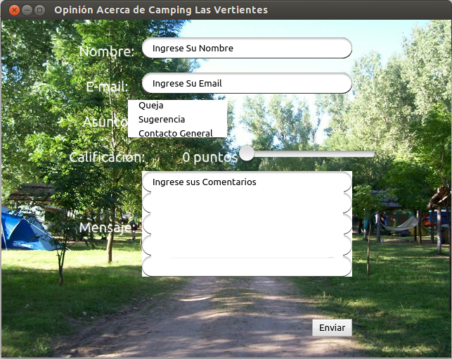

Opinia¶
¿Qué es Opinia?¶
Opinia es un software dedicado hacia las empresas interesadas en conocer la experiencia de sus clientes, a traves de un sistema de opiniones que luego se reunen en una base de datos general.
Implementación¶
Para poder implementar Opinia en una compañia, solo es necesaria la descarga del software desde su repositorio online(detallado más abajo) y la disposición de un terminal para su puesta en práctica donde el cliente contrará con la posibilidad de comunicarse con la empresa. Además se debe tener en cuenta que Opinia debe ser configurado como lo indica el programa en los datos de acceso FTP y SMTP. Para ello sólo se debe modificar el Código Fuente en Python, los datos que se encuentren entre asteriscos.
Limitaciones¶
Las limitaciones que presenta el programa son la imposibilidad de agregar caracteres de utf-8 en los campos de Ingreso de Texto. Esto quiere decir que símbolos que no esten presentes en el inglés, como por ejemplo la ñ, la aperturas de signos (¿ o ¡), los tildes, etc.
Requisitos¶
Los requisitos mínimos exigidos para la implementación de Opinia, son los siguientes:
Nota
- La disposición de Python 2.7 (o mayor) en el sistema operativo que fuere. Disponible Aquí: http://www.python.org/download/
- La disposición de Pilas-engine (librería para Python). Disponible Aquí: http://www.pilas-engine.com.ar/
- La disposición de una conexión a Internet (cualquier velocidad fuere).
Modo de Uso¶
El modo de uso es extremadamente simple, luego de configurar los datos requeridos sólo se debe tener en cuenta los siguientes pasos a seguir:
- Se debe hacer click sobre el campo “Nombre” y luego de que este se muestre como seleccionado, se debe borrar el contenido presente en él y posteriormente Escribir el Nombre del Cliente que opina.
- Se debe hacer click sobre el campo “Email” y luego de que este se muestre como seleccionado, se debe borrar el contenido presente en él y posteriormente Escribir el Email del Cliente que opina.
- Se debe hacer click sobre el Asunto deseado por el sujeto en calidad de opinador, y luego de recibir el aviso del programa que confirma la opción seleccionada, se puede proseguir al siguiente paso.
- En el caso de la calificación, simplemente se debe deslizar el campo y soltarlo en la calificación deseada.
- Se debe hacer click sobre el campo “Comentarios” y luego de que este se muestre como seleccionado, se debe borrar el contenido presente en él y posteriormente Escribir los Comentarios Adicionales del Cliente que opina.
- Luego de estos sencillos pasos, se debe hacer click en el botón “Enviar” y se debe aguardar a recibir la respuesta satifactoria del software, esto puede tardar algún tiempo, dependiendo de la conexión a Internet y del estado de los servidores que reciben la Información.
Advertencia
Se debe tener en cuenta que no se pueden usar caracteres no presentes en la lengua inglesa como lo aclara la sección “Limitaciones”.
Acerca De¶
El software ha sido elaborado por dos alumnos del ITS Villada de 4º año C, de la especialidad Informática. Año 2012.
Para más información puede contactarse con Augusto Jair augustojair_96@hotmail.com o con Pedro Ludueña pedro_ignacio_luduena@hotmail.com
El programa se encuentra con licencia GPL-3 de Creative Commons.

Opinia por Augusto Jair & Pedro Luduena se encuentra bajo una Licencia Creative Commons Atribución-CompartirIgual 3.0 Unported.
Basada en una obra en https://github.com/augustojair/Opinia.git.
Algunas Imágenes¶
Este ejemplo es el modelo que utiliza a la compañia básica del proyecto, el “Camping Las Vertientes”.
Descarga¶
La descarga de Opinia, se puede dar desde su repositorio en GitHub, ingresando el siguiente comando en la terminal de linux:
Código Python¶
Opinia.py¶
Nota
Se debe editar el archivo de configuración presente en ”.Data/conf.ini”
1 2 3 4 5 6 7 8 9 10 11 12 13 14 15 16 17 18 19 20 21 22 23 24 25 26 27 28 29 30 31 32 33 34 35 36 37 38 39 40 41 42 43 44 45 46 47 48 49 50 51 52 53 54 55 56 57 58 59 60 61 62 63 64 65 66 67 68 69 70 71 72 73 74 75 76 77 78 79 80 81 82 83 84 85 86 87 88 89 90 91 92 93 94 95 96 97 98 99 100 101 102 103 104 105 106 107 108 109 110 111 112 113 114 115 116 117 118 119 120 121 122 123 124 125 126 127 128 129 130 131 132 133 134 135 136 137 138 139 140 141 142 143 144 145 146 147 148 149 150 151 152 153 154 155 156 157 158 159 160 161 162 163 164 165 166 167 168 169 170 171 172 173 174 175 176 177 178 179 180 181 182 183 184 185 186 187 188 189 190 191 192 193 194 195 196 197 198 199 200 201 202 203 204 205 206 207 208 209 210 211 212 213 214 215 216 217 218 219 220 221 222 223 224 225 226 227 228 229 230 231 232 233 234 235 236 237 238 239 240 241 242 243 244 245 246 247 248 249 250 251 | #!/usr/bin/env python
# -*- coding: utf-8 -*-
"""Importamos los modulos"""
import pilas
import sys
import Multilinea
import ConfigParser
import urllib
"""Creamos y Configuramos todas las funciones"""
def cuando_hacen_click():
"""Esta funcion es el evento que actuara cuando se haga click en el boton "Enviar" """
"""Capturamos y Guardamos los datos del Formulario"""
pilas.avisar("Aguarde por favor, el formulario esta siendo enviado")
cfgFile_w = open(".Data/datos.ini",'w')
C.set('datos','nombre', txtNombre.texto)
C.write(cfgFile_w)
C.set('datos','email', txtEmail.texto)
C.write(cfgFile_w)
cfgFile_w.close()
guardarmensaje = open(".Data/mensaje.txt","w")
guardarmensaje.write(txtMensaje.texto)
guardarmensaje.close()
"""Disparamos las funciones que enviara el email y otra que creara el archivo html, para luego ser subido por otra funcion"""
enviar_email()
bajar_html()
"""Ahora se limpiaran los campos y se reiniciara el formulario"""
limpiar=open(".Data/datos.ini","w")
limpiar.write("[datos]\nnombre = \nemail = \nasunto = \ncalificacion = ")
limpiar.close()
limpiar2=open(".Data/mensaje.txt","w")
limpiar2.write("")
limpiar2.close()
txtNombre.texto = "Ingrese su Nombre"
txtEmail.texto = "Ingrese su Email"
txtMensaje.texto = u"Ingrese sus Comentarios"
cuando_cambia_Calificacion(0)
"""Si todo ha sido procesado correctamente, notificamos la aceptacion"""
pilas.avisar(u'Se envió el formulario')
print u'Se envió el formulario Correctamente'
def cuando_selecciona_Asunto(opcion_seleccionada):
"""Esta funcion es el evento que actuara al seleccionar una alternativa del Campo de Opcion"""
pilas.avisar("Ha seleccionado la opcion: " + opcion_seleccionada)
cfgFile_w = open(".Data/datos.ini",'w')
C.set('datos','asunto', opcion_seleccionada)
C.write(cfgFile_w)
cfgFile_w.close()
return None
def cuando_cambia_Calificacion(valor):
"""Esta funcion es el evento que actua cuando se cambia el valor del Campo Deslizante """
lblCalificacionTotal.definir_texto(str(int(valor * 10)) +u' puntos')
cfgFile_w = open(".Data/datos.ini",'w')
C.set('datos','calificacion', str(int(valor * 10)) +u' puntos')
C.write(cfgFile_w)
cfgFile_w.close()
def bajar_html():
"""Esta funcion es la que descargara el archivo html del sitio web y luego se lo entregara a la fucion que lo preparara para luego subirlo"""
def reporthook(*a): print a
C = ConfigParser.ConfigParser()
C.read(".Data/conf.ini")
web = C.get("SMTP","sitio-web")
url = web+"Opiniones/Opiniones.html"
file = ".Data/Opiniones.html"
urllib.urlretrieve(url, file, reporthook)
crear_html()
def crear_html():
"""Esta es la funcion que creara el informe HTML para luego ser subidos a la web"""
from ftplib import FTP
C.read(".Data/conf.ini")
usuario = C.get("FTP","usuario")
servidor = C.get("FTP","servidor")
password = C.get("FTP","password")
ftp = FTP(servidor);
ftp.login(user=usuario, passwd=password)
ftp.cwd("/public_html/Opiniones/");
ftp.retrbinary("RETR Opiniones.html",open(".Data/Opiniones.html","wb").write)
ftp.quit()
"""Cargamos los datos para crear el archivo html"""
C.read(".Data/datos.ini")
nombre = C.get("datos",'nombre')
email = C.get("datos",'email')
asunto = C.get("datos",'asunto')
calificacion = C.get("datos",'calificacion')
mensaje = open(".Data/mensaje.txt",'r')
mensajea = mensaje.read()
mensaje.close()
"""Guardamos el archivo html"""
creararchivo = open(".Data/Opiniones.html","a")
creararchivo.write(str("\n<hr>Nombre: "+nombre+"<br>Email: <a href=mailto:"+email+">"+email+"</a><br>Asunto: "+asunto+"<br>Calificacion: "+calificacion+"<br>Comentarios: "+mensajea))
creararchivo.close()
"""Disparamos la funcion que subira el archivo html"""
subir_html()
def enviar_email():
"""Esta es la funcion que enviara el email notificando de una nueva opinion"""
"""Importamos la libreria necesaria y cargamos los datos para luego ser enviados"""
import smtplib
C = ConfigParser.ConfigParser()
C.read(".Data/datos.ini")
nombre = C.get("datos","nombre")
email = C.get("datos","email")
asunto = C.get("datos","asunto")
calificacion = C.get("datos","calificacion")
cargarmensaje = open(".Data/mensaje.txt","r")
mensaje=cargarmensaje.read()
cargarmensaje.close()
C.read(".Data/conf.ini")
web = C.get("SMTP","sitio-web")
email2 = C.get("SMTP","email")
clave = C.get("SMTP","password")
"""Importamos los modulos adicionales necesarios"""
from email.mime.text import MIMEText
"""Creamos el mensaje"""
cuerpodelmensaje = str("Nombre: "+nombre+"\n"+"E-mail: "+email+"\n"+"Calificacion: "+calificacion+"\n"+"Comentarios: "+mensaje+"\n\nVer todos las Opiniones Recibidas\n"+web+"Opiniones/Opiniones.html")
msg = MIMEText(cuerpodelmensaje)
"""Conectamos con el server"""
msg['Subject'] = 'Usted ha recibido una nueva opinion - '+asunto
msg['From'] = email
msg['To'] = email2
"""Autenticamos"""
mailServer = smtplib.SMTP('smtp.gmail.com',587)
mailServer.ehlo()
mailServer.starttls()
mailServer.ehlo()
mailServer.login(email2, clave)
"""Enviamos"""
mailServer.sendmail(email2, email2, msg.as_string())
"""Cerramos conexion"""
mailServer.close()
def subir_html():
"""Esta es la funcion que subira el archivo html al servidor web"""
"""Importamos las librerias necesarias"""
import ftplib
import os
C.read(".Data/conf.ini")
""" Cargamos Datos FTP"""
ftp_servidor = C.get("FTP","servidor")
ftp_usuario = C.get("FTP","usuario")
ftp_clave = C.get("FTP","password")
ftp_raiz = '/public_html/Opiniones/'
""" Cargamos Datos del fichero a subir"""
fichero_origen = '.Data/Opiniones.html'
fichero_destino = 'Opiniones.html'
"""Conectamos con el servidor"""
try:
s = ftplib.FTP(ftp_servidor, ftp_usuario, ftp_clave)
try:
f = open(fichero_origen, 'r')
s.cwd(ftp_raiz)
s.storbinary('STOR ' + fichero_destino, f)
f.close()
s.quit()
except:
print "No se ha podido encontrar el fichero " + fichero_origen
except:
print "No se ha podido conectar al servidor " + ftp_servidor
"""Creamos la estructura basica del software"""
"""Inicializamos ConfigParser"""
C = ConfigParser.ConfigParser()
C.read(".Data/datos.ini")
"""Iniciamos Pilas"""
pilas.iniciar(titulo=u"Opinión Acerca de Camping Las Vertientes - Opinia")
fondo = pilas.fondos.Fondo(".Data/Camping.jpg")
fondo.escala = 1
posicionV = 10
posicionL = -170
posicionR = 30
lblEscala = 0.75
escapar = 500
Multilinea.inicializar()
""" Creamos el Boton"""
boton = pilas.interfaz.Boton("Enviar")
boton.x,boton.y = 150,-200
"""Convocamos el evento que actuara cuando se haga click en el boton"""
boton.conectar(cuando_hacen_click)
"""Creamos y Configuramos Las Entradas de Texto"""
lblNombre = pilas.actores.Texto("Nombre:")
lblNombre.escala = lblEscala
lblNombre.x,lblNombre.y = posicionL,(posicionV *20)
txtNombre = pilas.interfaz.IngresoDeTexto(limite_de_caracteres=39, texto_inicial="Ingrese Su Nombre")
txtNombre.x,txtNombre.y = posicionR,(posicionV *20)
lblEmail = pilas.actores.Texto("E-mail:")
lblEmail.escala = lblEscala
lblEmail.x,lblEmail.y = posicionL,(posicionV *15)
txtEmail = pilas.interfaz.IngresoDeTexto(limite_de_caracteres=39, texto_inicial="Ingrese Su Email")
txtEmail.x,txtEmail.y = posicionR,(posicionV *15)
"""Creamos y Configuramos el Campo de Opcion"""
lblAsunto = pilas.actores.Texto("Asunto:")
lblAsunto.escala = lblEscala
lblAsunto.x,lblAsunto.y = posicionL,(posicionV *10)
opcionesAsunto = pilas.interfaz.ListaSeleccion(['Queja', 'Sugerencia','Contacto General'], cuando_selecciona_Asunto)
opcionesAsunto.x,opcionesAsunto.y = posicionR-100,(posicionV *10)
"""Creamos el campo Mensaje"""
lblMensaje = pilas.actores.Texto("Mensaje:")
lblMensaje.escala = lblEscala
lblMensaje.x,lblMensaje.y = posicionL,(posicionV *-5)
txtMensaje = Multilinea.EntradaDeTexto(limite_de_caracteres=235, texto_inicial=u"Ingrese sus Comentarios")
txtMensaje.x,txtMensaje.y = posicionR,(posicionV *-5)
"""Creamos y configuramos el Campo deslizante"""
lblCalificacion = pilas.actores.Texto(u"Calificación:")
lblCalificacion.escala = lblEscala
lblCalificacion.x,lblCalificacion.y = posicionL,(posicionV * 5)
lblCalificacionTotal = pilas.actores.Texto(u'0 puntos')
lblCalificacionTotal.escala = lblEscala
lblCalificacionTotal.x,lblCalificacionTotal.y = posicionL + 2 + lblCalificacion.ancho,(posicionV * 5)
Calificacion = pilas.interfaz.Deslizador()
Calificacion.conectar(cuando_cambia_Calificacion)
Calificacion.x,Calificacion.y = posicionR,posicionV*5
"""Ejecutamos el Programa"""
pilas.ejecutar()
|
Multilinea.py¶
Nota
Este codigo es adicional, ya que Pilas no cuenta con la función Multilinea para una entrada de texto, por lo tanto el código fuente básico provisto por Pilas, ha sido editado por el equipo de “Opinia” y su código es el siguiente.
1 2 3 4 5 6 7 8 9 10 11 12 13 14 15 16 17 18 19 20 21 22 23 24 25 26 27 28 29 30 31 32 33 34 35 36 37 38 39 40 41 42 43 44 45 46 47 48 49 50 51 52 53 54 55 56 57 58 59 60 61 62 63 64 65 66 67 68 69 70 71 72 73 74 75 76 77 78 79 80 81 82 83 84 85 86 87 88 89 90 91 92 93 94 95 96 97 98 99 100 101 102 103 104 105 106 107 108 109 110 111 112 113 114 | # -*- encoding: utf-8 -*-
import pilas
import re
from pilas.interfaz.base_interfaz import BaseInterfaz
class EntradaDeTexto(BaseInterfaz):
def __init__(self, texto_inicial="", x=0, y=0, ancho=300, limite_de_caracteres=20, icono=None, acepta_multilinea=True):
BaseInterfaz.__init__(self, x=x, y=y)
self.texto = texto_inicial
self.cursor = ""
self._cargar_lienzo(ancho)
self.acepta_multilinea = acepta_multilinea
if icono:
self.icono = pilas.imagenes.cargar(icono)
else:
self.icono = None
self.imagen_caja = pilas.imagenes.cargar(".Data/mensaje.png")
self.centro = ("centro", "centro")
self._actualizar_imagen()
self.limite_de_caracteres = limite_de_caracteres
self.cualquier_caracter()
pilas.eventos.pulsa_tecla.conectar(self.cuando_pulsa_una_tecla)
pilas.mundo.agregar_tarea_siempre(0.40, self._actualizar_cursor)
self.fijo = True
def _actualizar_cursor(self):
if (self.tiene_el_foco):
if self.cursor == "":
self.cursor = "_"
else:
self.cursor = ""
else:
self.cursor = ""
self._actualizar_imagen()
return True
def cualquier_caracter(self):
self.caracteres_permitidos = re.compile(".*")
def solo_numeros(self):
self.caracteres_permitidos = re.compile("\d+")
def solo_letras(self):
self.caracteres_permitidos = re.compile("[a-z]+")
def cuando_pulsa_una_tecla(self, evento):
leermaximo=open(".Data/mensaje.txt","r")
numeromaximo=int(leermaximo.read())
leermaximo.close()
if (self.tiene_el_foco and self.activo):
if evento.codigo == '\x08' or evento.texto == '\x08':
if numeromaximo == 0:
print "0"
else:
numeromaximo = numeromaximo+1
escribirmaximo=open(".Data/mensaje.txt","w")
escribirmaximo.write(str(numeromaximo))
escribirmaximo.close()
print "1"
self.texto = self.texto[:-1]
elif str(evento.texto) == '\r' and self.acepta_multilinea:
self.texto += '\n'
numeromaximo = 0
escribirmaximo=open(".Data/mensaje.txt","w")
escribirmaximo.write(str(numeromaximo))
escribirmaximo.close()
print "2"
else:
if len(self.texto) < self.limite_de_caracteres:
if numeromaximo>=25:
self.texto += '\n'
self.texto = self.texto + evento.texto
numeromaximo=0
escribirmaximo=open(".Data/mensaje.txt","w")
escribirmaximo.write(str(numeromaximo))
escribirmaximo.close()
print "3"
else:
self.texto = self.texto + evento.texto
numeromaximo=numeromaximo+1
escribirmaximo=open(".Data/mensaje.txt","w")
escribirmaximo.write(str(numeromaximo))
escribirmaximo.close()
print "4"
self._actualizar_imagen()
def _cargar_lienzo(self, ancho):
self.imagen = pilas.imagenes.cargar_superficie(ancho, 150)
def _actualizar_imagen(self):
ancho = self.imagen_caja.ancho()
alto = self.imagen_caja.alto()
self.imagen.pintar_parte_de_imagen(self.imagen_caja, 0, 0, 40, ancho, 0, 0)
if self.icono:
dx = 20
self.imagen.pintar_parte_de_imagen(self.icono, 0, 0, 40, ancho, 7, 7)
else:
dx = 0
for x in range(40, self.imagen.ancho() - 40):
self.imagen.pintar_parte_de_imagen(self.imagen_caja, ancho - 40, 0, 40, alto, x, 0)
self.imagen.texto(self.texto + self.cursor, 15 + dx, 20)
def inicializar():
inicializar=open(".Data/mensaje.txt","w")
inicializar.write(str(0))
inicializar.close()
|